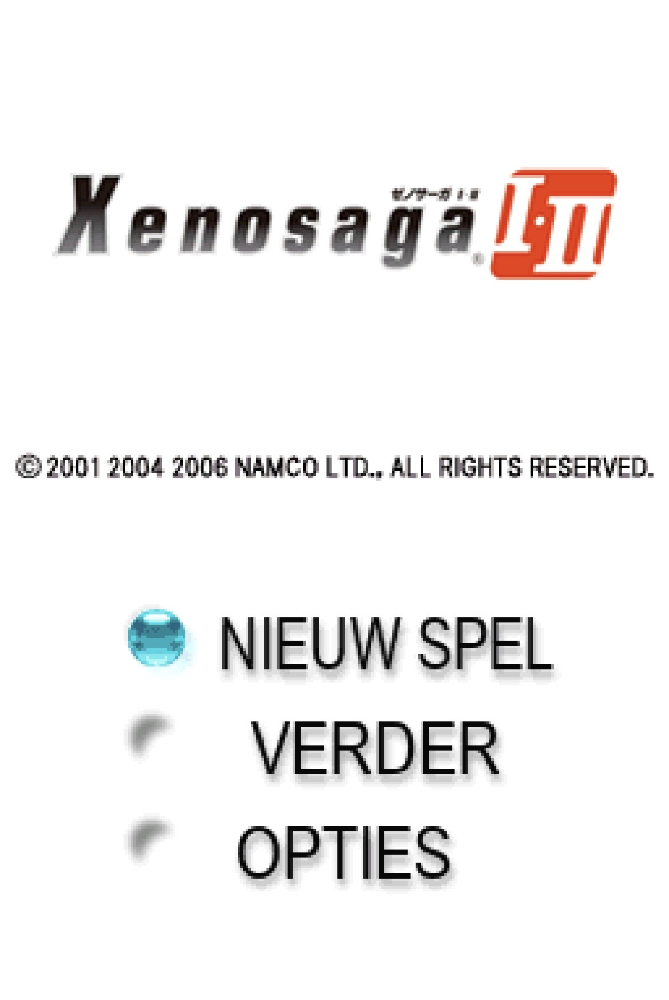
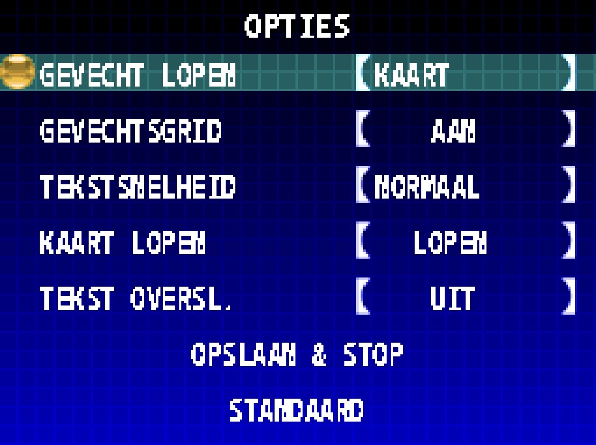
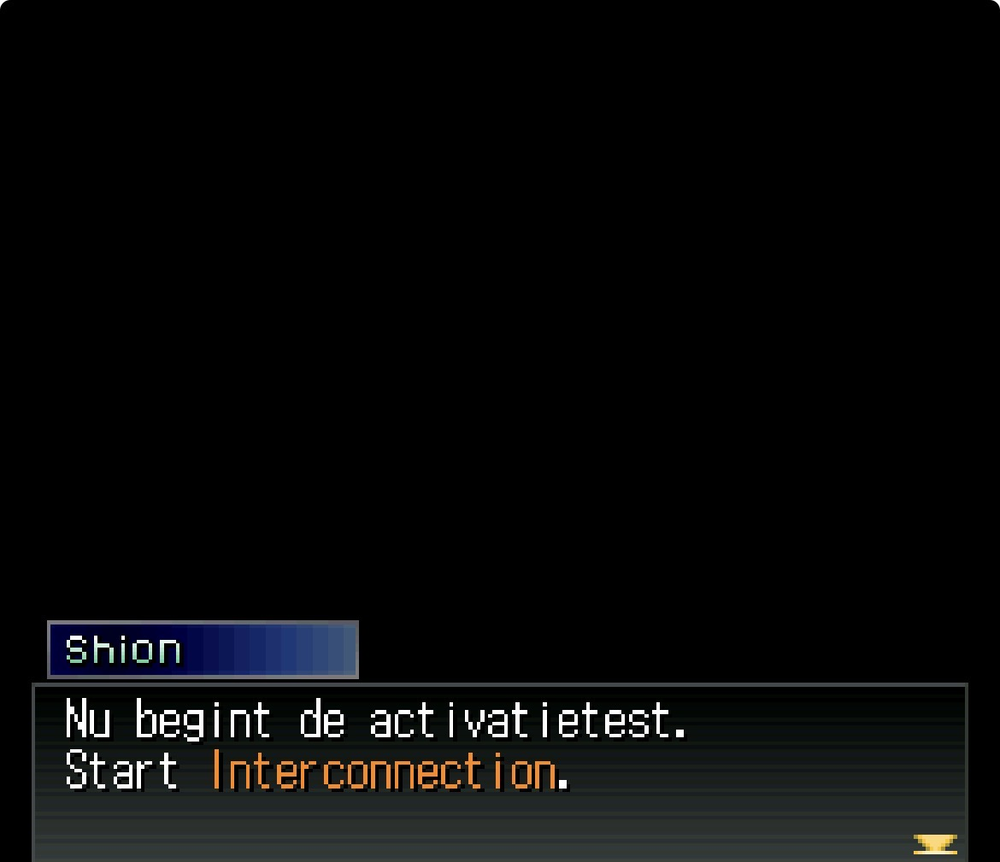
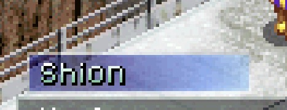
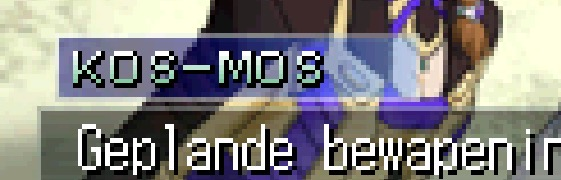
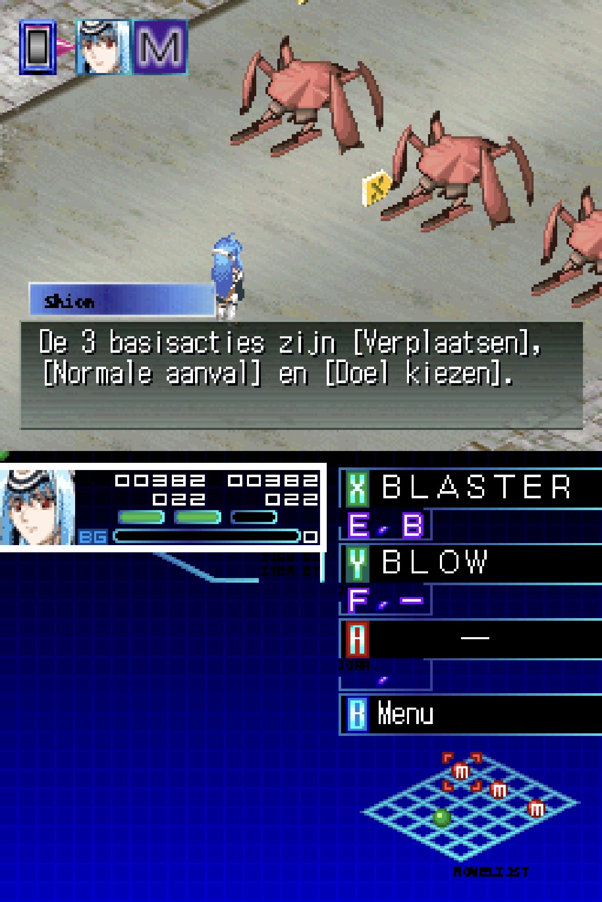
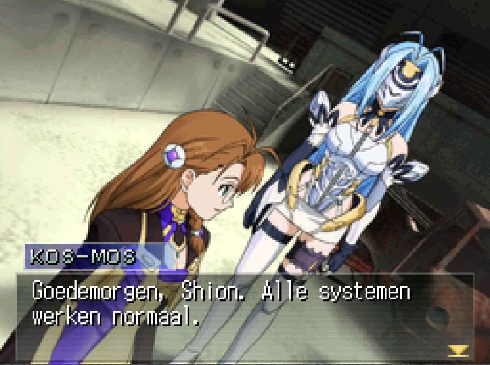

Xenosaga I+II Nederlands
De complete Nederlandse fanvertaling van Xenosaga I+II voor Nintendo DS. Story, keuzes, menu's, systeemtekst en de zichtbare UI-fixes komen samen in v1.0.17 Final.
Patch je eigen ROM
Kies de ondersteunde schone Japanse Xenosaga I+II ROM. De browser controleert de hash, past v1.0.17 lokaal toe, controleert de output en geeft daarna je gepatchte bestand terug. Je ROM wordt nergens geüpload.
DROP XENOSAGA I+II (JAPAN) .NDS
Alleen de ondersteunde clean ROM · verwacht 64 MiB
SHA-256 broncontrole is verplicht.
- ROM lezen
- ROM controleren
- Nederlandse patch laden
- Patch toepassen
- Nederlandse ROM verifiëren
- Klaar
Nederlandse v1.0.17 klaar
Output SHA-256 geverifieerd:
ab4b66928073ff6caa61dc0c4f2fcbafa0150a69f003133d252c3737efb26a0bDOWNLOAD GEPATCHTE ROMVerificatiehashes
- Schone Japanse bron SHA-256
938d07521cfc937d179402e85c8b0b43f3e929a494838ff1455b29126b56d356- Nederlandse v1.0.17 BPS SHA-256
8c102caaff764de32ca677d7de9cfb7622041a8c1f5001a5be60d55498783ae9- Nederlandse v1.0.17 output SHA-256
ab4b66928073ff6caa61dc0c4f2fcbafa0150a69f003133d252c3737efb26a0b
Mobiel patchen kan zolang Safari/Chrome genoeg geheugen beschikbaar heeft. Op een desktopbrowser is de 64 MiB bron + patch + output het betrouwbaarst.
De fixes staan in de game
De finale screenshots hieronder documenteren juist de gebieden die tijdens de ontwikkeling problemen gaven: titelmenu, opties, eerste tekstbox, speakerlabels en de F/E battle-indicatoren.






Van vertaling naar complete runtime-localisatie.
De laatste ontwikkelronde ging niet meer alleen over zinnen. Ook UI-assets, de eerste textbox-entrypoint, naamlabels, title/options/status rendering en de verborgen battle spritebank zijn gecorrigeerd.

Finale release record
Twee talen. Eén localization-archief.
Dit is uitsluitend de Nederlandse branch. De Engelse patch en technische documentatie blijven gescheiden op hun eigen projectpagina en GitHub-repository.
De Engelse release staat op de aparte projectpagina binnen localizations.madeby.re.
SWITCH TO EN →